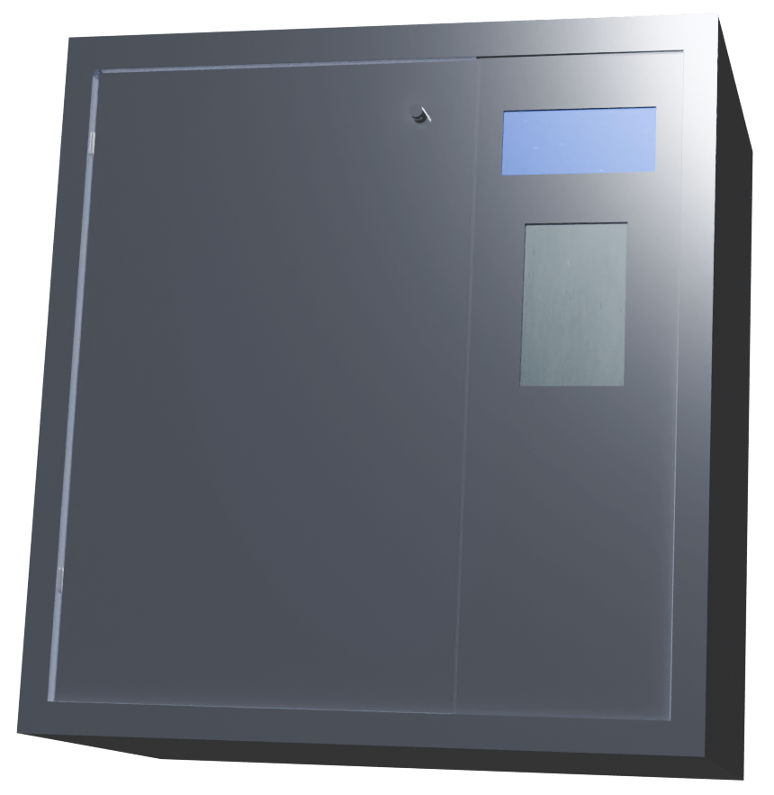
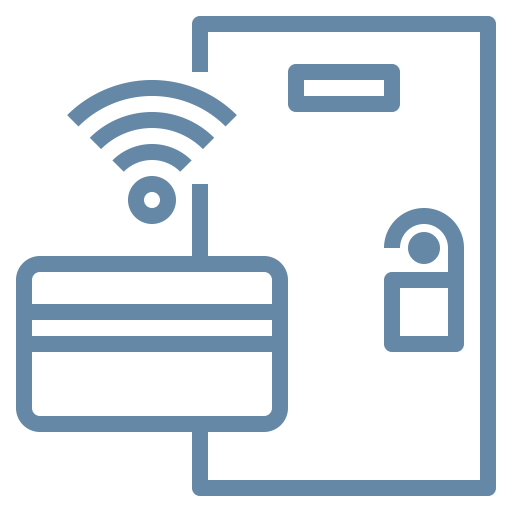

Protege tus pertenecias con FortBox, que implementa una tarjeta de bloqueo para tu casillero...
Funciones
Cada usuario tiene una tarjeta personal para desbloquear su propio casillero.
- Pantalla que indica el estado de apertura del casillero.
- Sonidos y luces LED que indican el estado de apertura.
- Desbloqueo mediante una tarjeta RFID.
- Resguarda de manera de segura
FortBox - Especificaciones
 Microcontrolador Arduino
Microcontrolador Arduino
Actúa como el cerebro del sistema, controlando el desbloqueo del casillero mediante la información recibida.
Tarjetas RFID
Actúan como llaves electrónicas, cuyo escaneo asegura la entrada del usuario autorizado.

Sensor RFID
Captura los datos de las tarjetas de manera rápida, agilizando el acceso eficiente al casillero.
Pantalla LCD
Ofrece una interfaz clara y sencilla, mostrando mensajes de estado en tiempo real.
Objetivos del proyecto
Seguridad de Objetos Personales
Garantiza la seguridad de los objetos personales en protección contra accesos no deseados.Garantia y mantenimiento
Posee un sistema de mantenimiento técnico, y en caso de un desperfecto de fabrica cuenta con una garantia de cambio.

Sistema de Desbloqueo por Tarjeta
Permite el desbloqueo del casillero mediante una tarjetas.Alarma para Casilleros Violentados
Cuenta con un sistema de alarma en caso de que el casillero sea violentado.Acceso Alternativo en Caso de Fallo Eléctrico
Cuenta con una llave manual para desbloquear el casillero en caso de falla de corriente.